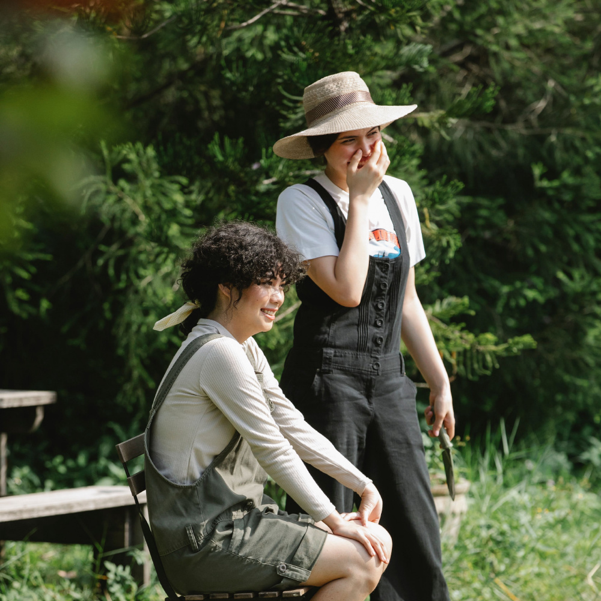

Nostalgia Camera · 1895 / 1972 / 2004
Same friends.
Another time.
A shared laugh. A slow afternoon. The nights you wish lasted longer. Keep the people, and see the moment through another era.
Three moments together. About a minute. No sign-up.
Made by Ahmet, physicist & app developer ↘01 / 03 · A SHARED LAUGH
How would you remember this day?
Tap a photo to choose. On a small screen, swipe to compare all three.

Your pick
Your three choices
Nostalgia Camera for iPhone & iPad. The 1895 and 2004 looks shown here are free; 1972 requires Pro. Optional in-app purchases.
A note from the maker
The people stay.
The years change.
I'm Ahmet, a physicist and the developer of Nostalgia Camera. I built this little experiment around moments worth keeping: laughing with a friend, a picnic, an evening that passes too quickly.
Each scene starts from one licensed photograph, with the same crop for all three versions. I processed it with the app's photo engine. These are software looks inspired by camera eras, not photographs taken in those years or on those cameras.
These are prepared examples, not in-app camera captures. Your phone, light and each shot's variation will affect the result. 1895 uses Sepia Plate, 1972 uses Instant Warm, and 2004 uses Digital Cyan. All three use the same square crop.
Photo credits & originals
- Gary Barnes — A shared laugh · Pexels License
- Polina Tankilevitch — A lakeside picnic · Pexels License
- cottonbro studio — An evening together · Pexels License
Licensed photographs from Pexels, cropped and processed for this experiment. The people pictured are not app testimonials; no endorsement is implied.
Image sources and processing record ↗Your choices stay in this page and disappear when you reload it. No account, photo upload or advertising tracker. GitHub Pages serves this site and may keep standard request logs.